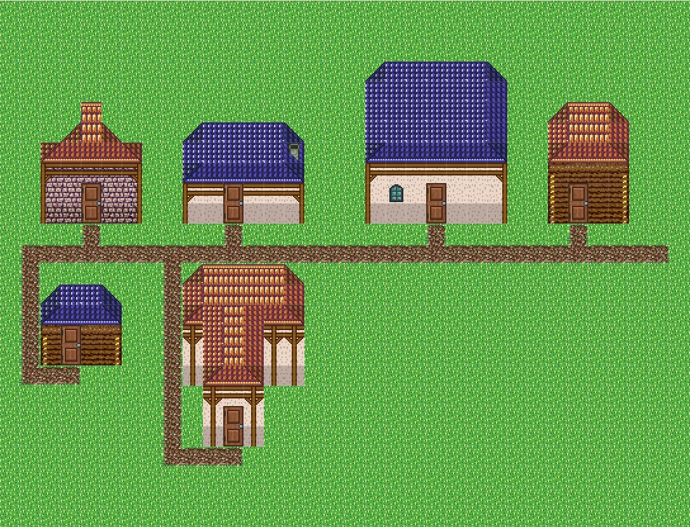
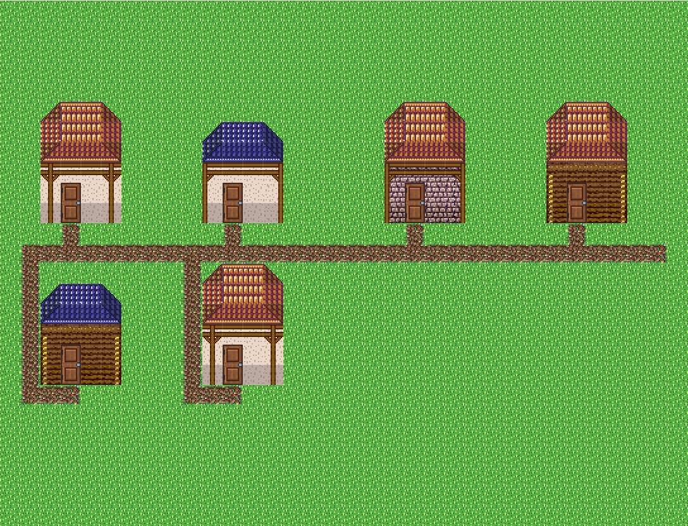
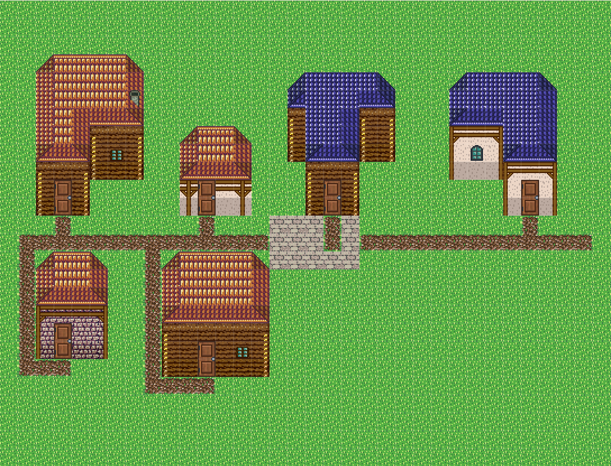
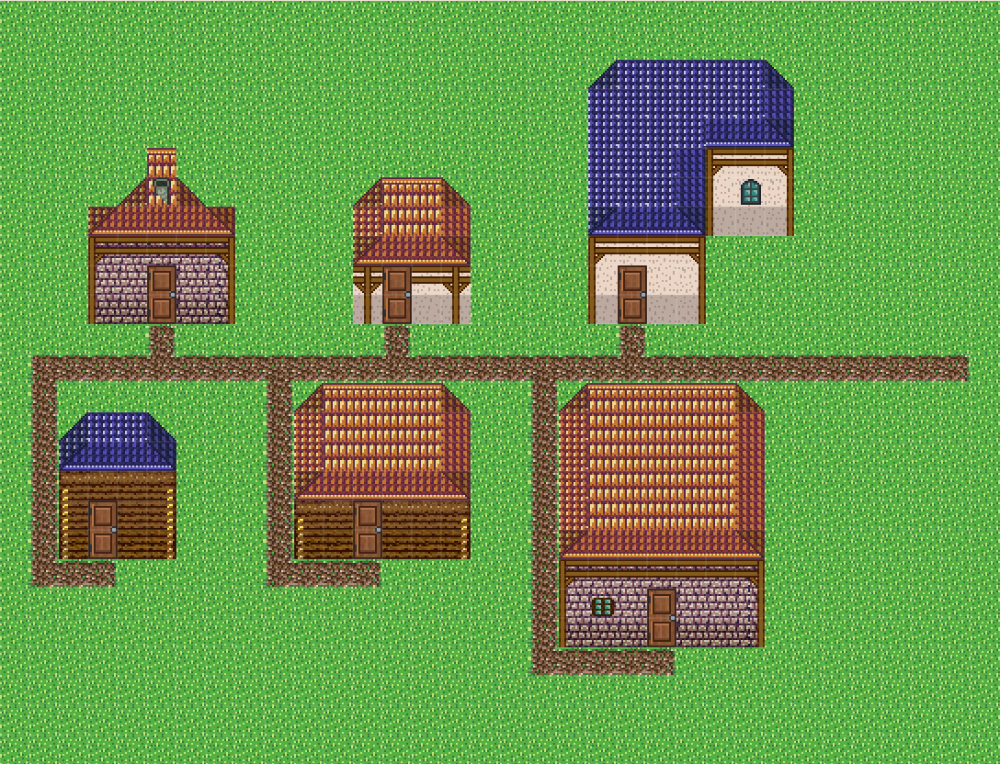

"집 모양도 다양하지 않다" 는 지적의 원인은 카탈로그가 아니라 뽑는 손이었다. 34종은 이미 있었고, 고르는 주체를 LLM 에서 코드로 옮기자 다양성이 부탁이 아니라 불변식이 됐다. 모든 화면은 이 리포의 실제 에디터 스크린샷이다.
아래 두 장은 시드도 배치도 같다. 오른쪽만 「같은 모양으로」를 켰다. 즉 오른쪽이 예전 동작(한 종에 수렴)이고 왼쪽이 지금이다.


// 다양성을 보장하는 세 줄. 관찰·되먹임 고리가 필요 없어진 이유다. const pool = shuffled(HOUSE_TEMPLATE_DEFS, rng); // 34종을 시드로 섞고 const kits = shuffled(MIXABLE_HOUSE_KIT_IDS, rng); // 킷도 섞어 순환 // 필지마다 pool 을 앞에서부터 소비 → 같은 모양이 두 번 나오지 않는다
그 고리는 이제 필요 없다. 다만 지우지는 않았다 — 조수 경로가 아직 쓰고 있고, 이 리포트의 다양성 수치를 타일에서 되읽어 검증하는 데 같은 감지기를 썼다.


layout 은 수치로 뭉갤 수 없는 축이라 파라미터 스펙에
choice 종류를 새로 추가했고, 드롭다운 위젯은 스펙에서 자동 생성된다 —
다음 오퍼레이터가 선택형 파라미터를 써도 UI 코드를 건드리지 않는다.
| # | 단계 | 재사용한 것 |
|---|---|---|
| 1 | 도로 스파인 — 영역을 가로지르는 길 | 슬롯 path 본체 타일 |
| 2 | 필지 — 스파인 위·아래 줄로 폭 4~8 분할 | — |
| 3 | 템플릿·킷 비복원 추출 | HOUSE_TEMPLATE_DEFS 34종 · MIXABLE_HOUSE_KIT_IDS |
| 4 | 집 시공 — 스크래치 사본에 찍는다 | stampFootprintHouseKit 그대로 |
| 5 | 골목 — 모든 문을 도로에 잇는다 | — |
| 6 | 원본과 diff → 쓰기 목록 | — |
GameMap 을 직접 고치도록 되어 있는데,
오퍼레이터 계약은 "맵을 만지지 않고 쓰기 목록만 돌려준다" 이다. 그래서 사본에 찍고 원본과 비교했다 —
지붕·벽·문·창 문법과 킷 규칙이 한 줄도 다시 쓰이지 않고 통째로 재사용된다.
테스트는 통과했는데 화면이 틀린 경우들이다 — 그래서 스크린샷을 눈으로 본다.
| # | 증상 | 원인과 수정 |
|---|---|---|
| 1 | 문이 없는 집이 섰다 | stampFootprintHouseKit 은 문 위치만 돌려주고 타일은 찍지 않는다(문 이벤트를 만드는 호출자가 처리하는 규약). 이벤트를 안 만들므로 116/146 을 직접 깐다 |
| 2 | 골목이 집 몸통을 관통했다 | 문은 언제나 남쪽 벽에 난다. 도로 남쪽 줄 집은 도로를 등지고 있어 직선으로 그으면 집을 뚫는다 → 문 앞 한 칸 내려간 뒤 집 옆으로 빠져 ㄱ자로 우회 |
| 3 | 「같은 모양으로」가 3종을 냈다 | 필지마다 "맞는 첫 템플릿" 을 찾으면 필지 크기가 달라 다른 모양이 뽑힌다 → 가장 좁은 필지 기준으로 한 모양을 미리 정한다 |
울타리를 집 둘레에 둘렀더니 세로 기둥만 반복되어 집을 두르지 못했다.
fence 그룹은 방향별 조각 8개(378·379·380·408…)인데 대표 타일 하나를 반복했기 때문이다.
조각의 의미를 읽어 이어 붙이는 것은 오토타일러의 일이라, 어설픈 울타리를 남기느니 파라미터째 뺐다.
다음 단계에서 오토타일러를 물려 되살린다.
의도 파서에 마을을 붙였다. 오퍼레이터를 늘렸을 뿐인데 문장 경로가 자동으로 따라온다.
"광장 있는 마을, 집 다섯 채" → { "op": "village", "params": { "layout": "plaza", "houses": 5 } } "같은 모양 집들이 줄지어 선 마을" → { "op": "village", "params": { "uniform": true } }
| 불변식 | 어떻게 확인하나 |
|---|---|
| 같은 시드 → 같은 마을 | 쓰기 목록 완전 일치, 다른 시드는 불일치 |
| 넘어온 맵을 변형하지 않는다 | 호출 전후 타일 배열 해시 동일 (순수 함수) |
| 모든 쓰기가 영역 안 | 좌표 경계 검사 |
| 다양성 | 선언값이 아니라 detectHouses 로 타일에서 되읽어 모양 수 확인 |
| 「같은 모양으로」 = 정확히 1종 | 동일 |
| 모든 문 앞이 길 | 감지된 문 좌표의 위·아래 칸이 길 타일 |
| 집끼리 겹치지 않음 | 감지된 bbox 쌍별 교차 검사 |
| 물·기존 건물 위에 짓지 않음 | 물로 채운 영역이 한 칸도 안 바뀜 |
| 좁은 영역은 짓지 않고 이유를 말함 | 쓰기 0개 + 사유 문자열 |
| 낯선 칩셋 타일로도 도로를 깖 | 길 타일 777 만 나오고 기본 타일은 안 나옴 |
신규 14 테스트, 관련 104개 전부 통과 · 회귀 0, 신규 소스 타입 에러 0.
| 한계 | 왜 지금은 이런가 | 다음 |
|---|---|---|
| 집 킷이 칩셋 종속 | 지면·길·광장은 슬롯을 타지만, 킷은 타일 목록이 아니라 지붕·벽·문·창 구조체라 슬롯 모양이 다르다 | 킷 슬롯 정의 |
| 울타리 없음 | 방향별 조각을 이어 붙이려면 오토타일러가 필요하다 | 오토타일러 연결 |
| 밭·소품 없음 | 작물 슬롯이 아직 없다 | scatter 오퍼레이터 |
| 집 내부 없음 | 실내는 별도 문법(방·가구·계단)이다 | interior 오퍼레이터 |
choice 종류 추가만 계약 확장). 레지스트리 계약이 실제로 버틴다는 것이
두 번째 오퍼레이터로 확인됐다.